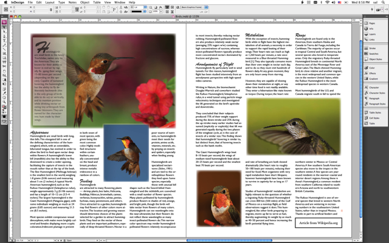
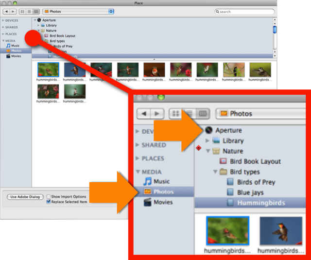
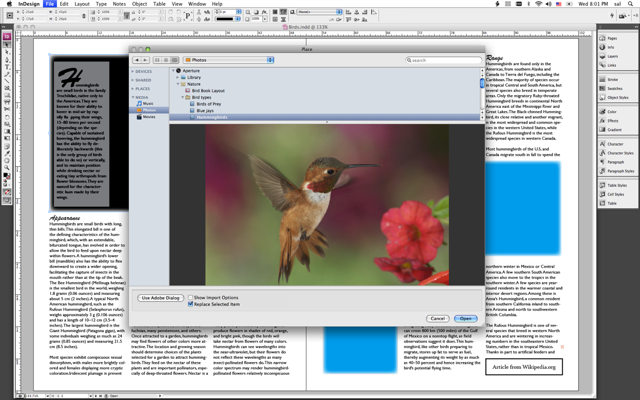
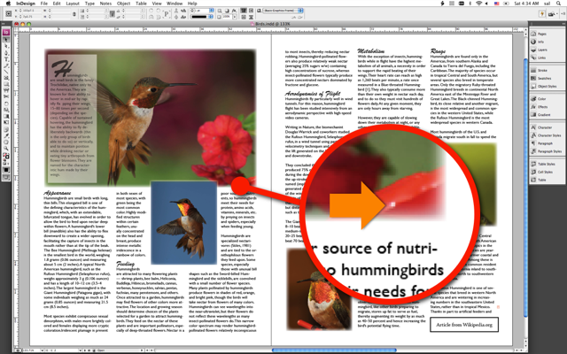
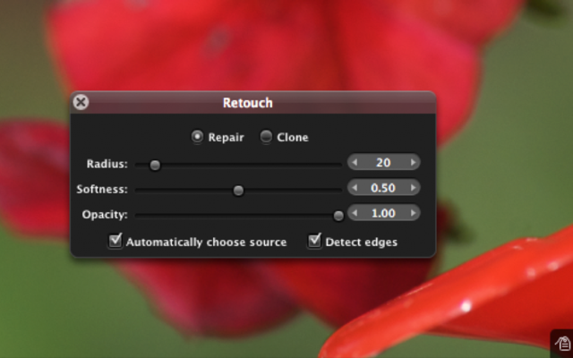
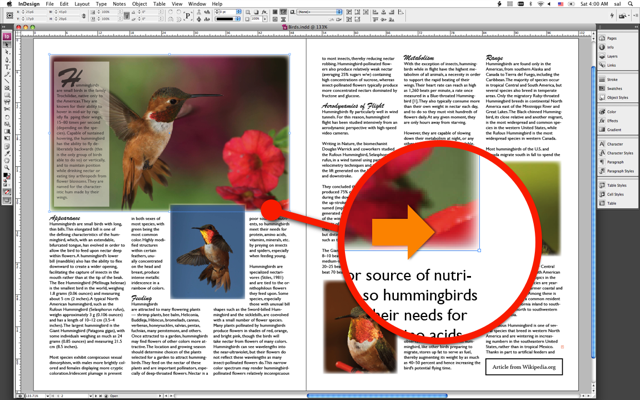
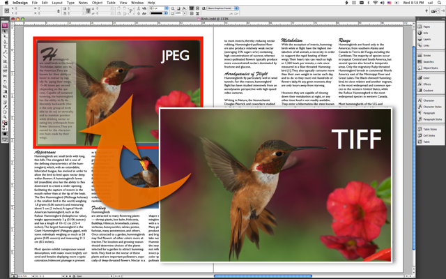

Aperture-InDesign Integration Demo
Enhanced AppleScript support in Aperture 2.0.1 combines with Mac OS X functionality to provide a new level of interactivity with page-layout applications such as Adobe InDesign CS3.
For the first time, Aperture preview images can be easily placed into another application's document while maintaining direct links to the related master images in the Aperture library. Placed previews can be updated as needed and even replaced with high-resolution exports in preparation for offset or direct-to-plate printing.

Leopard's New Open Dialog
The new Open Dialog in Mac OS X v10.5 (Leopard) provides direct access to Aperture and iPhoto libraries, without the necessity of launching their respective applications.

This means that the high-quality JPEG previews can be viewed within any application, and added into documents and projects.

Image Fingerprints
In Aperture 2.0, every preview image has been "finger-printed" with a special identifer that AppleScript scripts can use to locate the master image represented by the placed preview image. This marking technique allows a source image master to be located and edited while updating the placed previews to reflect any changes to the master library images.



Open Prepress Interface
The new connectivity between Aperture and its published preview images also delivers the means for swapping low-resolution previews with high-resolution exports, in preparation for printing to film or plates.

Try It For Yourself
If you're one of the "seeing is believing" types, download the Aperture-InDesign demo installer, and witness this powerful publishing connection yourself.
Download the demo installer.